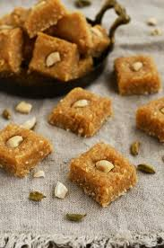

Gulaab Jamun
Ingredients
- Sugar
- Bread
- Oil
Recipe
-
Mix 1 cup milk powder, 1/4 cup flour, 1/4 tsp baking soda, and 2 tbsp ghee or milk,
Add warm milk to form a smooth dough. - Boil 1 1/2 cups sugar, 1 1/2 cups water, and crushed cardamom for 5-7 mins. Keep warm.
- Roll dough into smooth balls, avoiding cracks.
- Fry the balls in hot oil/ghee until golden, then soak them in the warm syrup for 30 mins.

Burfi
Ingredients
- Sugar
- Bread
- Oil
Recipe
- In a pan, boil 2 cups full-fat milk and reduce to a thick consistency.
-
Stir in 1 cup sugar, 1/4 cup condensed milk, and 1/4 tsp cardamom powder Cook until,
it thickens further. - Once thick, pour the mixture into a greased tray and spread evenly.
- Let it cool completely, then cut into pieces and garnish with chopped nuts.
